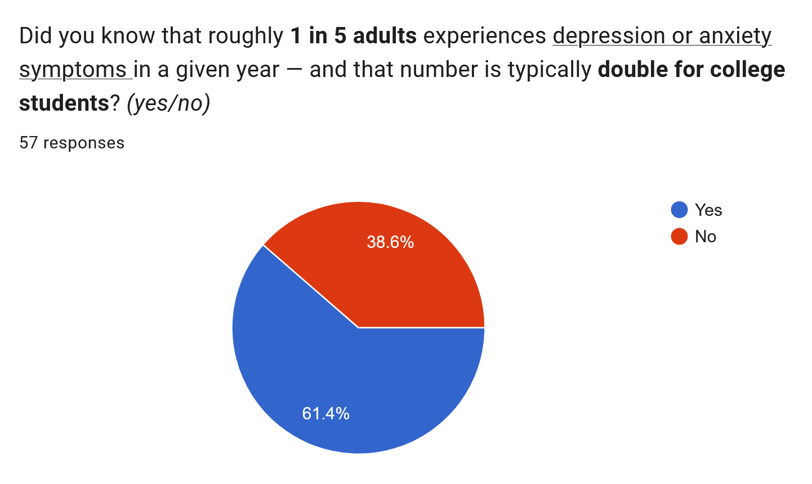
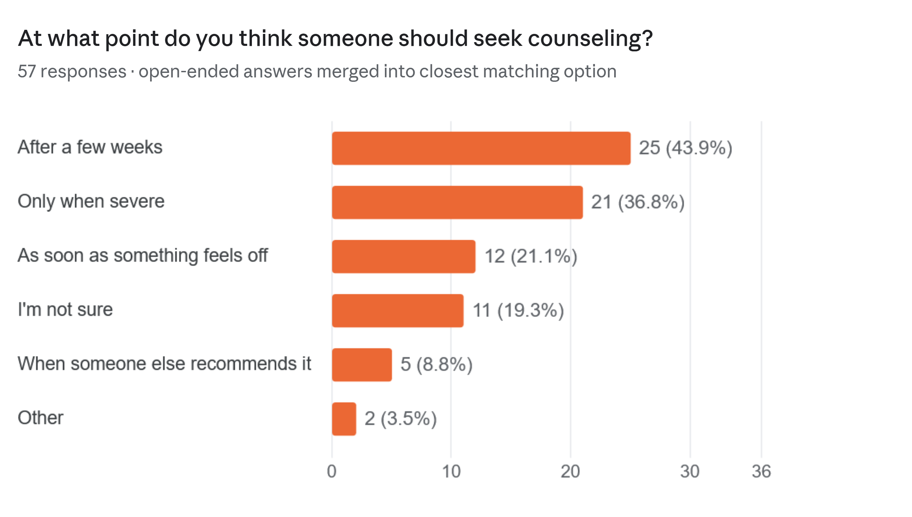
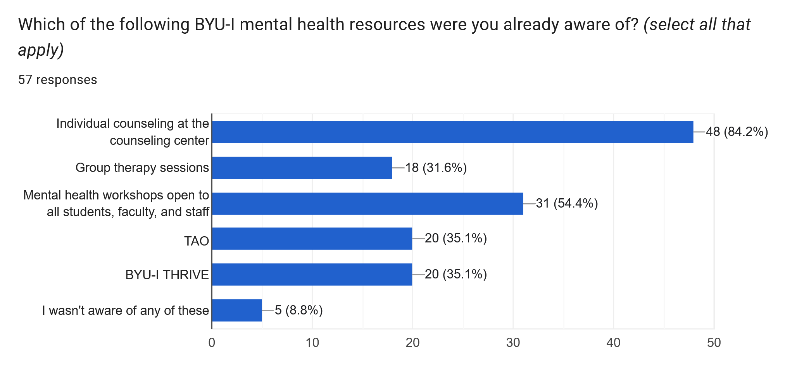
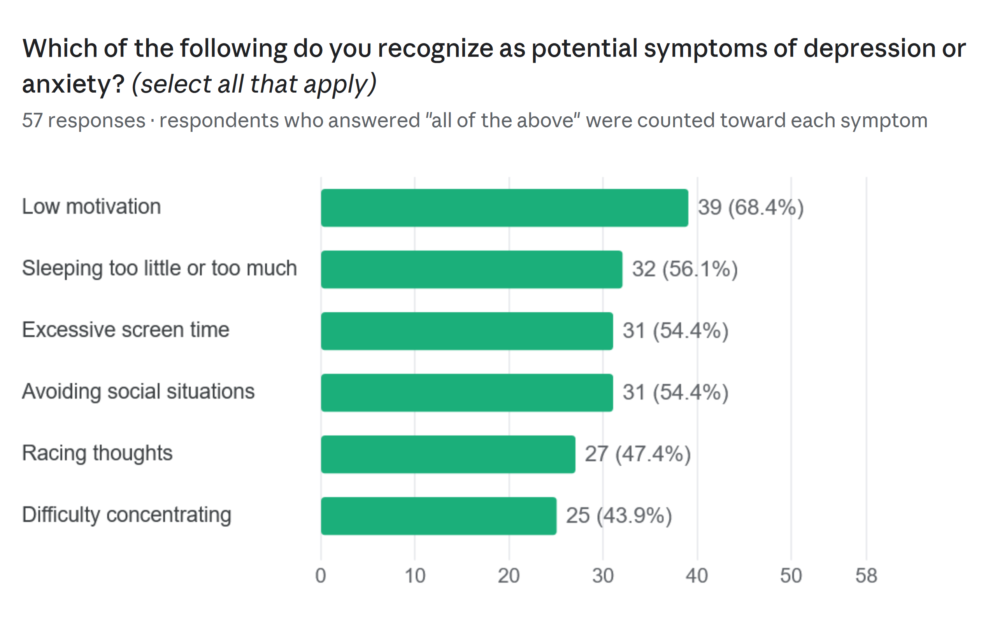

The Problem
I wanted to learn more about Mental Health Issues like Depression and Anxiety. My wife also has depression and I wanted to learn to recognize symptoms better and raise awareness with whatever I learned.
Project Idea
- Gather online data on mental health statistics students in Idaho and nationwide.
- Interview any professors or professions at BYU-I or in the Rexburg area.
- Conduct a survey of students using the data to gauge students awareness
- Create a website, infographics and a flyer to help other learn about the Counseling Center, etc.
Materials
Results!
- Interviewed Brother Hunt and Brother Elder
- Gathered 20 useful figures and statistics
- Almost 60 people weighed in on survey
- Handed out 30 flyers and shared more in digital copies
| Statistic | Source (MLA 9th Edition) | URL |
|---|---|---|
| 38% of US college students meet criteria for depression; 34% screen positive for anxiety; 76% report high/moderate stress in the past 30 days. | Healthy Minds Network. Healthy Minds Study 2023–2024 Data Report. Healthy Minds Network, 2024. | View Report |
| Idaho young adult rates (18–25) exceed national benchmarks: Serious Mental Illness (13.5% vs. 11.6%), Major Depressive Episodes (23.2% vs. 20.1%), and serious thoughts of suicide (16.6% vs. 13.6%). | Substance Abuse and Mental Health Services Administration. National Survey on Drug Use and Health 2021/2022. Idaho Office of Drug Policy, 2024. | View Needs Assessment |
| 64% to 68.7% of rural college students experience moderate-to-severe loneliness compared to 54% of suburban/urban peers. | Assessing Rural Education Assets and Strengths. AREAS National Survey Report 2025. University of Idaho, 2025. | View Survey Results |
| 52.5% of depressed youth in Idaho receive no mental health care whatsoever. | Idaho Department of Health and Welfare. "Why Suicide is a Problem in Idaho." Frontier Psychiatry, 2023. | View Article |
| 30.4% of Boise State University students have been diagnosed with an anxiety disorder; 25.2% have been diagnosed with a depressive disorder. | American College Health Association. National College Health Assessment (NCHA III) Boise State University Campus Report. Boise State University Wellness Services, 2020. | View Campus Facts |
| 69.5% of Boise State undergraduates fall into the "high" or "very high" categories for psychological distress. | Boise State University Kinesiology Department. Undergraduate Student Stress & Resilience: Project Report. Boise State University, 2020. | View Project Report |
| Student Perception Gap: 69% of college students reported a past-year mental health struggle, compared to only 43% of parents who believed their child struggled. | UnitedHealthcare. Young Adult & College Student Behavioral Health Report. Business Wire, 2026. | View Press Release |
Survey Results




For Next Time
- Interview more people and get more relevant data
- Create a Ted-talk style presentation to teach more people
Gospel Connection
Mosiah 18:9
Yea, and are willing to mourn with those that mourn; yea, and comfort those that stand in need of comfort...
Alma 7:11-12
11 And he shall go forth, suffering pains and afflictions and temptations of every kind; and this that the word might be fulfilled which saith he will take upon him the pains and the sicknesses of his people.
12 And he will take upon him death, that he may loose the bands of death which bind his people; and he will take upon him their infirmities, that his bowels may be filled with mercy, according to the flesh, that he may know according to the flesh how to succor his people according to their infirmities.
Sources
- The Book of Mormon
- Healthy Minds Network, Healthy Minds Study (HMS) National Data Report (2023–2024).